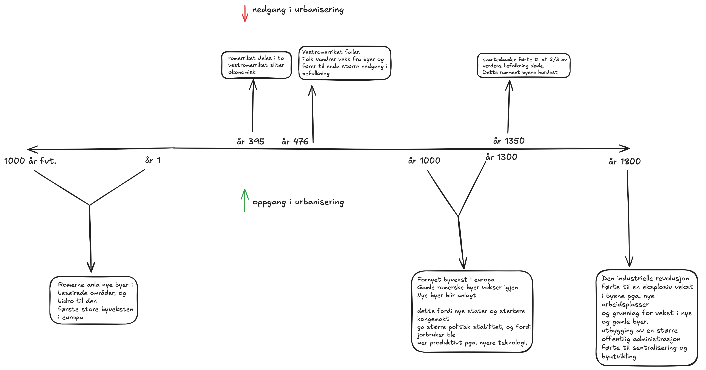

oppgave 1: hva menes med
urbanisering?
- urbanisering er prosessen hvor mennesker flytter fra bygda/landet
til byer.
oppgave
2: på hvilke måter påvirket romerne byutviklingen i london?
- romerne påvirket byutviklingen i london ved at de etablere et
handelsområde i london, hvor de bygget smier og markeder, etter å ha
erobret det og etablert et militært fort. dette gjorde at mange kom til
london for å handle i markedene der. i tilleg hadde romerne etablert
sitt hovedkvarter i london under sin erobring av england.
oppgave 3: hva kunne
gjøre at byer vokste?
- det som kunne gjøre at byer vokste var for eksempel en forsterket
kongemakt, som samlet folket tettere, eller forbedret landbruk ved hjelp
av ny teknologi som gjorde at det var mulig å holde oppe en større
populasjon på samme mark.
oppgave
4: hva kunne være årsak til nedgangstider for byene?
- årsaker til nedgangstider for byene kunne være for eksempel pester,
som svartedauden, som gjorde det vanskeligere å holde populasjonen oppe.
annen grunn for nedgang kunne være utvandring eller nedgang i
innvandring. krig og ustabilitet kunne også føre til at folk valgte å
forlate byene.
oppgave 5: hvilken rolle
spilte bymuren?
- rollen bymuren spilte var å beskytte byen fra ytre press mot det
romerske riket, og for å beskytte innbyggerne. det kunne også være en
måte for byen å fortelle at de hadde mange ressurser.
oppgave
6: hvilken funksjon hadde gilder og laug? finnes det organisasjoner i
dag som vi kan sammenlikne laugene med?
- funksjonen til gilder og laug var å skape et fellesskap og sosiale
og religiøse rammer for mennesker med samme yrke. I Norge var laug brukt
for å beskrive sammensluttninger av håndtverkere. laugene sto for
opplæring i fagene, og bestemte hvem som kunne jobbe innenfor et bestemt
fagfelt. fagforeninger er moderne organisasjoner vi kan sammenligne med
lauger, i den forstand at fagforeringer skal ivareta arbeidernes
interesser, og består av arbeidere innenfor samme fagfelt.
oppgave
7: hvilke sosiale og kulturelle konsekvenser fikk livet i byen i tidlig
moderne tid?
- sosiale konsekvenser av bylivet i tidlig moderne tid var det at folk
samlet seg mer enn tidligere, og bodde tettere. folk gikk på teater
sammen, var hos vertshus og drakk te, kaffe og kakao, og leste
nyhetsbrev. det var normat folk byfolk å diskutere samfunnspærsmål, og
Paris ble sentrum for opplysningstidens diskusjoner om vitesnkap og
filosofi. en kulturell konsekvens av bylivet var at ideer spredte seg
raskt mellom byene ved hjelp av handelsmenn som reiste mellom byer med
varer, og kom tilbake til egen by med varer fra langt unna, for eksempel
franske klær i Tromsø.
oppgave 8:
hvorfor ble byene viktige maktsentre?
- byene ble viktige maktsentre, fordi byene ofte var store
handelssentre, som førte til en stor konsentrasjon av rikdommer.
myndighetene skattela byene kraftigere enn på landet, men samtidig
spyttet de inn mer penger i byen enn på landet, som førte til større
økonomisk vekst i byen. eksempel på dette kan være det at london
etterhvert ble sentrum for det britiske imperiet og internasjonal
finans.
oppgave
9: på hvilke måter er londons utvikling typisk og utypisk for
byutviklingen i europa?
- de typiske med london er det at den har hatt stor betydning for
handelen i europa, og at det er etablert nær en sjøtilgang, og er lett
tilgjengelig. den er også veldig gammel, fra når romerne erobret
england. utypisk er det at london har opplevd gjentatte nedbrytelser i
form av branner og bombinger.
oppgave
10: byutviklingen i europa har gått i tre store bølger. lag ei tidslinje
hvor du markerer perioder med vekst og nedgang. skriv deretter inn
grunner til at urbaniseringen øker eller går ned.
